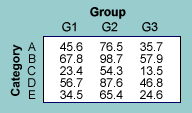
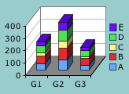

When
the values in each group have a meaningful total, the proportions within groups
are easier to compare than the raw values, expecially if the group totals differ
much.
When
the values in each group have a meaningful total, the proportions within groups
are easier to compare than the raw values, expecially if the group totals differ
much.Data
Pie and bar charts describe a single column of values. Data become more interesting when there is similar from several different groups (e.g. regions, years or age groups). The data in each group can be displayed in a separate chart, but there are better ways to compare the groups.
Proportions
When
the values in each group have a meaningful total, the proportions within groups
are easier to compare than the raw values, expecially if the group totals differ
much.
Graphs
Graphical display of this type of data is based on arrangements of the bars of bar charts for the separate groups. The bars can be clustered by group or category, or they can be stacked by group. Since bar height can be based on the raw values or percentages within groups, there are six possible graphical displays.

All six types of bar chart are commonly used, but stacked bar charts of the raw values or percentages are compact and often easiest to understand.
Chartjunk
As in simple bar and pie charts, 3-dimensional versions of clustered and stacked bar charts should be avoided — they obscure the information and can mislead.